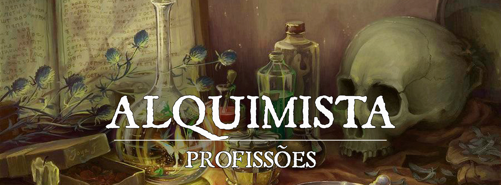

Alquimista
O leve som do borbulhar do líquido esverdeado sobre o fogo. O cheiro acre de diversos componentes inundando o ambiente. Diversos animais peçonhentos presos em vidros e gaiolas sibilam enquanto encaram o humano que cuidadosamente amassa sementes até formarem um pó fino.
A prática de confeccionar bebidas que pudessem alongar a vida ou de processos que pudessem trazer benefícios aos que as consumissem é uma prática antiga, e ao decorrer dos anos, entre diversos acertos e falhas, foi-se refinando e se tornou objeto de estudo para um secto da sociedade.
Benefício
Batido, não mexido. - Ao iniciar a jornada como um Alquimista, a primeira coisa que se precisa saber é como manusear os seus instrumentos de trabalho. Ao escolher esse Ofício, o personagem adquire proficiência em Kit de Alquimista. Para exercer seu Ofício dentro da Guilda, não é necessário ter consigo um Kit, pois a Oficina lhe providencia tudo que é necessário.
Alquimia Improvisada - Para os Alquimistas Aventureiros, é essencial estar preparado para todos os eventos. Durante um descanso curto ou longo, um alquimista pode tentar criar um dos produtos alquímicos que conheça, de forma improvisada. A criação pode ser um Tônico, Veneno ou Artifício de Nível até a metade do Rank do Alquimista, arredondado para baixo (Mínimo 1). Para tal, o alquimista deve realizar um teste com suas Ferramentas de Alquimia de Dificuldade 10+Nível do Produto e gastar uma quantidade em Peças de Ouro no valor de 2x o preço original do produto alquimico. Em caso de sucesso, o Alquimista cria aquele item, porém o mesmo é improvisado e instável, e dura apenas até o final da aventura. Em caso de falha, o item não é criado, e o valor em Ouro continua sendo gasto. Para isso, é necessário que o Alquimista tenha consigo um Kit de Alquimia, que custa 40 PO.
Classes & Sinergias
Diversas vezes, um Aventureiro traduz para a sua Classe muitas das experiências de seu Ofício.
Portanto, algumas Classes são mais predominantes e mais passivas de se favorecerem com os conhecimentos trazidos da Manufatura.
Ao atingirem o nível 9 de Classe, o Artesão recebe um bônus de +1 na rolagem para definir a Qualidade do Item a ser fabricado.
Em caso de um personagem ter 2 das classes listadas a baixo no nível 9, o bonus acumula até +2.
As classes que recebem este beneficio são:
- Artífice Alquimista
- Artífice Artilheiro - Apenas Artifícios Alquímicos
- Clérigo da Natureza - Apenas Poções e Venenos
- Ladino Ladrão - Apenas Artifícios Alquímicos
- Ladino Assassino - Apenas Venenos
- Patrulheiro Guardião do Enxame - Apenas Venenos
- Druida Círculo da Terra - Apenas Poções
- Druida Círculo dos Esporos - Apenas Venenos
- Caçador de Sangue Mutante -Poções e Venenos
- Monge da Misericórdia -Poções e Venenos
Fabricando Tônicos, Poções, Venenos e Artifícios Alquímicos
A fim de exercer seu Ofício com profissionalismo e dedicação, é importante que o Alquimista saiba também suas limitações. Ao iniciar um trabalho, o Alquimista poderá fazer Tônicos, Poções, Venenos e Artifícios Alquímicos por conta própria, segundo os parâmetros descritos nesta seção.
Tabela de Produção
| Rank Do Artesão | Nível do Item |
|---|---|
| 1 - Novato | Tônicos, Venenos e Artifícios Alquímicos Nv1 |
| 2 - Aprendiz | Tônicos, Venenos e Artifícios Alquímicos Nv2 |
| 3 - Aspirante | Poções Mágicas Comuns |
| 4 - Notável | Tônicos, Venenos e Artifícios Alquímicos Nv3 |
| 5 - Experiente | Tônicos, Venenos e Artifícios Alquímicos Nv4 |
| 6 - Perito | Poções Mágicas Incomuns |
| 7 - Veterano | Tônicos, Venenos e Artifícios Alquímicos Nv5 |
| 8 - Mestre | Tônicos, Venenos e Artifícios Alquímicos Nv6 |
| 9 - Grão-Mestre | Poções Mágicas Raras |
A Título de esclarecimento de nomenclatura, Tônicos são misturas não mágicas, feitas através de substâncias naturais, como ervas, químicos e outros elementos. Já Poções, são misturas imbuídas com a Trama, que produzem efeitos mágicos.
Produzindo itens mágicos e adquirindo Diagramas
Para a produção de itens mágicos, é necessário que a Guilda tenha disponível o Diagrama para a realização daquele item específico, caso contrário, os membros não deterão o conhecimento de como o fabricarem.
Constantemente, a Caravana poderá trazer Diagramas que ensinarão a Fabricação de um ou mais Itens Mágicos. Para tal, a Guilda, através de recursos próprios ou doações de membros, pode adquirir esses Diagramas, que ficarão à disposição da Oficina relacionada com o tipo específico de Item Mágico ensinado por aquele Diagrama, indeterminadamente.
A Guilda ou um próprio membro pode, enquanto uma Caravana estiver na Guilda, encomendar Diagramas para que a próxima Caravana os traga. Para tal, pagará 50% a mais do valor e garantirá que sua encomenda chegará na próxima visita.
Tempo e Requisito de Produção
Embora venenos e tônicos tenham um período de produção similar, os Artifícios Alquímicos tendem a ser mais complexos, demandando mais tempo, cuidado e esforço, sem mencionar as Poções, que exigem trabalho em conjunto com um Encantador para serem devidamente efetivas.
Tônicos e Venenos
| Raridade | Produção | Requisito |
|---|---|---|
| Nível 1 | 1 dia | Rank 1 - Novato |
| Nível 2 | 2 dias | Rank 2 - Aprendiz |
| Nível 3 | 2 dias | Rank 4 - Notável |
| Nível 4 | 3 dias | Rank 5 - Experiente |
| Nível 5 | 3 dias | Rank 7 - Veterano |
| Nível 6 | 4 dias | Rank 8 - Mestre |
Artifícios Alquímicos
| Raridade | Produção | Requisito |
|---|---|---|
| Nível 1 | 1 dia | Rank 1 - Novato |
| Nível 2 | 2 dias | Rank 2 - Aprendiz |
| Nível 3 | 4 dias | Rank 4 - Notável |
| Nível 4 | 4 dias | Rank 5 - Experiente |
| Nível 5 | 5 dias | Rank 7 - Veterano |
| Nível 6 | 6 dias | Rank 8 - Mestre |
Poções
| Raridade | Produção | Requisito |
|---|---|---|
| Comum | 2 dias | Rank 3 - Aspirante |
| Incomum | 4 dias | Rank 6 - Perito |
| Rara | 7 dias | Rank 9 - Grão-Mestre |
Itens Mágicos Próprios
| Raridade | Produção | Requisito |
|---|---|---|
| Comum | 4 dias | Rank 3 - Aspirante |
| Incomum | 7 dias | Rank 6 - Perito |
| Raro | 10 dias | Rank 9 - Grão-Mestre |
Preço dos Produtos Alquímicos
Os preços dos produtos criados por um alquimista seguem a seguinte tabela:
Tônicos
| Níveis | Valor |
|---|---|
| 1 | 20 PO |
| 2 | 40 PO |
| 3 | 80 PO |
| 4 | 100 PO |
| 5 | 120 PO |
| 6 | 240 PO |
Venenos
| Níveis | Valor |
|---|---|
| 1 | 20 PO |
| 2 | 40 PO |
| 3 | 160 PO |
| 4 | 200 PO |
| 5 | 240 PO |
| 6 | 480 PO |
Artifícios Alquímicos
| Níveis | Valor |
|---|---|
| 1 | 20 PO |
| 2 | 40 PO |
| 3 | 160 PO |
| 4 | 200 PO |
| 5 | 360 PO |
| 6 | 500 PO |
Poções de Cura Mágicas
| Níveis | Valor |
|---|---|
| Comum | 50 PO |
| Incomum | 150 PO |
| Rara | 300 PO |
Poções Gerais Mágicas
| Níveis | Valor |
|---|---|
| Comum | 50 PO |
| Incomum | 500 PO |
| Rara | 1.100 PO |
Tônicos
Os tônicos são misturas naturais que produzem todos os tipos de efeitos no corpo de quem os ingerir. O tônico não necessariamente necessita ser em líquido dentro de um frasco. Podem ser, por exemplo, pomadas, gases, ou até mesmo comidas e bebidas. Fica a cargo do alquimista o funcionamento de seus produtos.
Uma criatura deve utilizar sua ação para usar o tônico em si ou em outra criatura que esteja a até 5 pés dela.
| Nome | Nível | Efeito |
|---|---|---|
| Restaurador Mínimo | 1 | Uma criatura que utilize este tônico recupera 1d4 pontos de vida. |
| Revigorante Mínimo | 1 | Uma criatura que utilize este tônico recebe 3 pontos de vida máximos por 1 hora. |
| Relaxante Mínimo | 1 | Uma criatura que utilize este tônico durante um descanso curto, recupera 3 pontos de vida extras ao rolar o primeiro dado de vida nesse descanso. |
| Repelente | 1 | Uma criatura que utilize este tônico repele insetos comuns por 24 horas. Adicionalmente, criaturas insectoides recebem desvantagem em jogadas de ataque feitas contra uma criatura sob efeito deste tônico. |
| Desvirtuante | 1 | Uma criatura que utilize este tônico esconde seu cheiro por 1 hora. Criaturas que utilizem o olfato para rastrear uma criatura sob efeito deste tônico recebem desvantagem em qualquer teste que façam. |
| Antitoxina | 2 | Uma criatura que utilize este tônico recebe vantagem em salvaguardas contra venenos por 1 hora. Este tônico não produz efeito em mortos-vivos e constructos. |
| Bloqueador Térmico | 2 | Uma criatura que utilize este tônico recebe vantagem em salvaguarda contra altas e baixas temperaturas por 24 horas. |
| Fôlego | 2 | Uma criatura que utilize este tônico consegue prender a respiração pelo dobro do tempo que conseguiria por 1 hora. |
| Restaurador Menor | 2 | Uma criatura que utilize este tônico recupera 2d4 pontos de vida. |
| Revigorante Menor | 2 | Uma criatura que utilize este tônico recebe 6 pontos de vida temporários por 1 hora. |
| Relaxante Menor | 2 | Uma criatura que utilize este tônico durante um descanso curto, pode rolar um dado de vida extra ao rolar o primeiro dado de vida nesse descanso. |
| Despetrificador | 3 | Uma criatura que utilize este tônico encerra a condição petrificado e, se estiver sendo petrificada, também encerra o efeito. Esse tônico não surte efeito em alvos petrificados a mais de 1 minuto. |
| Estimulante Mental | 3 | Uma criatura que utilize este tônico recebem vantagem em testes de perícia usando Inteligência e Sabedoria por 1 hora. A criatura recebe vulnerabilidade a dano psíquico pela duração do efeito. Ao final do efeito, a criatura deve realizar um salvaguarda de Constituição CD 15, recebendo 1 nível de exaustão em um fracasso. |
| Perceptivo | 3 | Uma criatura que utilize este tônico recebe um bônus de +5 em sua Percepção Passiva por 1 hora. |
| Restaurador | 3 | Uma criatura que utilize este tônico recupera 3d4 pontos de vida. |
| Revigorante | 3 | Uma criatura que utilize este tônico recebe 9 pontos de vida temporários por 1 hora. |
| Relaxante | 3 | Uma criatura que utilize este tônico durante um descanso curto, recebe 2 pontos de vida extras para cada dado de vida que rolar nesse descanso. |
| Panacéia | 4 | Uma criatura que utilize este tônico é curada de uma doença não-mágica que a esteja afetando. |
| Descompressor Muscular | 4 | Uma criatura que utilize este tônico encerra a condição paralisado. |
| Olhar Aguçado | 4 | Uma criatura que utilize este tônico recebe vantagem em testes de Sabedoria (Percepção) e Inteligência (Investigação) que requeiram a visão por 1 hora. |
| Restaurador Maior | 4 | Uma criatura que utilize este tônico recupera 4d4 pontos de vida. |
| Revigorante Maior | 4 | Uma criatura que utilize este tônico recebe 15 pontos de vida temporários por 1 hora. |
| Relaxante Maior | 4 | Uma criatura que utilize este tônico durante um descanso curto, reduz 1 nível de exaustão ao final do descanso. Esse tônico não tem efeito caso o descanso tenha sido interrompido alguma vez. |
| Certeiro | 5 | Este tônico deve ser aplicado à uma arma corpo a corpo ou em 10 munições, fornecendo um bônus de +3 em jogadas de dano feitas com a arma. O efeito termina após 10 ataques, acertando ou não, ou após 1 minuto. |
| Foco | 5 | Uma criatura que utilize este tônico recebe um bônus de +3 em jogadas de dano feitas por feitços, mas apenas no somatório final do dano, por 1 minuto. |
| Restaurador Superior | 5 | Uma criatura que utilize este tônico recupera 5d4 pontos de vida. |
| Revigorante Superior | 5 | Uma criatura que utilize este tônico recebe 20 pontos de vida temporários por 1 hora. |
| Relaxante Superior | 5 | Uma criatura que utilize este tônico durante um descanso curto, pode somar o modificador de Constituição duas para cada dado de vida que rolar nesse descanso. |
| Isotônico | 6 | Uma criatura que utilize este tônico reduz 1 nível de exaustão. |
| Estimulante de Reflexos | 6 | Uma criatura que utilize este tônico recebe vantagem em testes de perícia e salvaguardas usando Destreza. |
| Restaurador Máximo | 6 | Uma criatura que utilize este tônico recupera 24 pontos de vida. |
| Revigorante Máximo | 6 | Uma criatura que utilize este tônico recebe 30 pontos de vida temporários por 1 hora. |
| Relaxante Máximo | 6 | Uma criatura que utilize este tônico durante um descanso curto, recupera a quantidade máxima possível de cada dado de vida que rolar nesse descanso. |
Venenos
Venenos são criados através de substâncias naturais ou alquimicamente modificadas que produzem efeitos negativos em quem os é aplicado.
Aplicação
Com uma ação, um jogador pode aplicar o veneno em uma das seguintes formas:
- Ingestão: O veneno pode ser aplicado em comida ou bebida, mas o alvo deve consumir uma dose inteira do veneno. Caso o alvo consuma uma dose parcial, ele sofre um efeito reduzido, tendo vantagem no teste de resistência.
- Inalação: O veneno é aplicado como um gás nocivo, que pode ser arremessado como uma ação em uma criatura ou superfície (quadrado de 5ft) a até 15 ft. Qualquer criatura que estiver no local será afetada pelo veneno. Segurar a respiração não impede o efeito do veneno, por afetar as vias nasais, orais e outras mucosas do corpo.
- Ferimentos: O veneno pode ser aplicado em uma arma, em munições, armadilhas ou outras superfícies que serão utilizadas para ferir um inimigo. Caso o ataque não acerte, o veneno não é aplicado.
Um veneno dura 1 minuto depois de aplicado e no caso de armas, faz efeito em até 10 ataques (que acertem ou não) ou 10 munições. Armas de dano contundente também podem aplicar o veneno por ferimento.
Classe de Desafio
Cada nível de artifício alquímico tem uma Classe de Desafio diferente, conforme tabela abaixo.
| Nível | Classe de Desafio |
|---|---|
| 1 | 11 |
| 2 | 13 |
| 3 | 15 |
| 4 | 16 |
| 5 | 17 |
| 6 | 19 |
Venenos e Seus Efeitos
| Substância | Nível | Efeito |
|---|---|---|
| Erva-Moura (Planta) | 1 | Uma criatura que entre em contato com esse veneno deve realizar um salvaguarda de Constituição, recebendo 1d4 de dano venenoso em um fracasso. |
| Lunara (Fungo) | 1 | Uma criatura que entre em contato com esse veneno deve realizar um salvaguarda de Sabedoria, ficando amedrontada pelo humanóide mais próximo por 1 minuto em um fracasso. Ao final de cada turno da criatura afetada, ela deve refazer o salvaguarda, finalizando o efeito em si em um sucesso. |
| Pó de Sprite | 1 | Uma criatura que entre em contato com esse veneno deve realizar um salvaguarda de Constituição, ficando envenenada por 1 minuto em um fracasso. Ao final de cada turno da criatura afetada, ela deve refazer o salvaguarda, finalizando o efeito em si em um sucesso e ficando imune aos efeitos deste veneno por 1 hora. |
| Veneno de Ettercap | 2 | Uma criatura que entre em contato com esse veneno deve realizar um salvaguarda de Constituição, recebendo 1d8 de dano venenoso e ficando envenenada por 1 hora em um fracasso. Ao final de cada turno da criatura afetada, ela deve refazer o salvaguarda, finalizando o efeito em si em um sucesso e ficando imune aos efeitos deste veneno por 24 hora. |
| Terra de Cemitério + Gota de Agua Benta | 2 | Este veneno afeta apenas mortos-vivos e ignora resistência e imunidade. Um morto-vivo que entre em contato com esse veneno deve realizar um salvaguarda de Constituição, recebendo 1d6 de dano radiante e tendo seu movimento reduzido em 10 pés (não cumulativo com mais de uma utilização deste veneno) até o final de seu próximo turno em um fracasso. |
| Chapéu de Fada (Fungo) | 2 | Uma criatura que entre em contato com esse veneno deve realizar um salvaguarda de Constituição, ficando envenenada por 1 hora em um fracasso. Enquanto estiver envenenada, a criatura não pode falar mentiras, como sob o efeito do feitiço Zona da Verdade. |
| Seiva Negra (Planta) + Véu da Morte (Fungo) | 3 | Uma criatura que entre em contato com esse veneno deve realizar um salvaguarda de Constituição, recebendo 1d6 de dano venenoso e ficando envenenada em um fracasso. O dano causado por esse veneno reduz os pontos de vida máximos da criatura. A criatura pode refazer o salvaguarda a cada 24 horas, recebendo mais 1d6 de dano venenoso em um fracasso, ou terminando o efeito em si em um sucesso e ficando imune aos efeitos deste veneno por 24 horas. Efeitos que curem os pontos de vida máximos perdidos encerram o efeito do veneno. |
| Sangue de Ghast | 3 | Uma criatura que entre em contato com esse veneno deve realizar um salvaguarda de Constituição, recebendo 2d6 de dano venenoso e ficando envenenada por 1 minuto em um fracasso. Ao final de cada turno da criatura afetada, ela deve refazer o salvaguarda, recebendo 2d6 de dano venenoso em um fracasso, ou finalizando o efeito em si em um sucesso e ficando imune aos efeitos deste veneno por 24 horas |
| Muco de Carrion Crawler | 3 | Uma criatura que entre em contato com esse veneno deve realizar um salvaguarda de Constituição, tendo seus músculos da face, boca e língua semiparalisados em um fracasso. Esse efeito impede que o alvo fale com clareza, dificultando, inclusive, a conjuração. Sempre que a criatura afetada for conjurar um feitiço que necessite de componente verbal, ela deve realizar um teste usando seu atributo de conjuração, perdendo completamente o feitiço e o espaço de magia em um fracasso. A dificuldade do teste é a mesma do veneno. Ao final de cada turno da criatura afetada, ela deve refazer o salvaguarda, finalizando o efeito em si em um sucesso e ficando imune aos efeitos deste veneno por 24 hora. |
| Extrato de Semente Lunar (Planta) | 3 | Uma criatura que entre em contato com esse veneno deve realizar um salvaguarda de Constituição, não podendo ter sua forma alterada (mesmo por efeitos mágicos) por 1 hora em um fracasso. Ao final de cada turno da criatura afetada, ela deve refazer o salvaguarda, finalizando o efeito em si em um sucesso e ficando imune aos efeitos deste veneno por 24 hora. |
| Veneno de Serpente | 4 | Uma criatura que entre em contato com esse veneno deve realizar um salvaguarda de Constituição, recebendo 3d6 de dano venenoso em um fracasso, ou metade desse dano em um sucesso. |
| Seiva Negra (Planta) + Raiz de Mandrágora (Planta) | 4 | Uma criatura que entre em contato com esse veneno deve realizar um salvaguarda de Constituição, ficando envenenada por 1 hora em um fracasso. Se a criatura afetada fracassar o salvaguarda por 5 ou mais, ela fica inconsciente pela duração do veneno. A criatura acorda se ela receber dano ou outra criatura gastar uma ação para acordá-la. |
| Seiva Negra (Planta) + Gota de Orvalho | 4 | Uma criatura que entre em contato com esse veneno deve realizar um salvaguarda de Constituição, ficando envenenada por 1 minuto em um fracasso. Enquanto a criatura estiver envenenada, ela também está cega. Ao final de cada turno da criatura afetada, ela deve refazer o salvaguarda, finalizando o efeito em si em um sucesso e ficando imune aos efeitos deste veneno por 24 hora. |
| Glândula de Basilisco | 5 | Uma criatura que entre em contato com esse veneno deve realizar um salvaguarda de Constituição, ficando envenenada por 1 hora e impedida pela duração do veneno. Ao final de cada turno da criatura afetada, ela deve refazer o salvaguarda. Ao obter sucesso três vezes, os efeitos do veneno terminam. Ao fracassar três vezes, a criatura fica petrificada pela duração do veneno. Os sucessos e os fracassos não precisam ser subsequentes. |
| Raiz de Mandrágora (Planta) + Musgo Relâmpago (Fungo) | 5 | Uma criatura que entre em contato com esse veneno deve realizar um salvaguarda de Constituição, ficando envenenada por 4 horas e incapacitada pela duração do veneno. Ao final de cada turno da criatura afetada, ela deve refazer o salvaguarda, finalizando o efeito em si em um sucesso e ficando imune aos efeitos deste veneno por 24 hora. |
Artifícios Alquímicos
Os artifícios alquímicos são maravilhas das produções alquímicas, sejam eles produtos químicos/tóxicos, ou engenhocas com mecanismos complicados.
Classe de Desafio
Cada Nível de Veneno tem uma Classe de Desafio diferente, conforme tabela abaixo.
| Nível | Classe de Desafio |
|---|---|
| 1 | 11 |
| 2 | 13 |
| 3 | 15 |
| 4 | 16 |
| 5 | 17 |
| 6 | 19 |
Artifícios
| Artifício | Nível | Efeito |
|---|---|---|
| Semente Explosiva | 1 | Esta esfera de latão do tamanho de uma bola de bilhar contém uma pequena quantidade de pólvora e um gatilho mecânico. Uma semente explosiva pode ser lançada a até 30 pés com uma ação, detonando com o impacto. Cada criatura a pelo menos 5 pés da semente explosiva deve fazer um salvaguarda de Destreza, sofrendo 1d8 de dano contundente em um fracasso, ou metade desse dano em um sucesso. |
| Dissipador | 1 | Criado através de uma cabaça de argila, este artifício alquímico de uso único permite que poções, tônicos e até venenos tenham efetividade a longo alcance. Como uma ação, um jogador pode despejar a poção, tônico ou veneno que desejar dentro do dissipador, e este permanecerá armazenado até que seja utilizado ou trocado de recipiente com uma ação bônus. O dissipador pode ser arremessado a até 30 pés com uma ação, quebrando com o impacto. Uma criatura a pelo menos 5 pés da cabaça, sofre os efeitos normais do conteúdo do dissipador. |
| Frasco de Reagentes Instáveis | 1 | O processo alquímico geralmente deixa restos de substâncias. Esses descartes, se usados da forma correta, podem até mesmo se tornar armas letais. Com uma ação, você pode espirrar o conteúdo deste frasco em uma criatura a até 5 pés de você ou arremessá-lo a até 20 pés, quebrando-o com o impacto. Em ambos os casos, faça um ataque à distância contra a criatura ou objeto alvo, tratando o frasco como uma arma improvisada. Em um acerto, o alvo sofre 1d6 de dano ácido. |
| Máscara de Gás | 1 | Uma máscara de gás é uma máscara selada que protege seu usuário da inalação de gases, vapores, fumaças e partículas perigosas, incluindo partículas radioativas. Enquanto estiver usando uma máscara de gás, você é imune a produtos químicos inalados, toxinas ou partículas não-mágicas, e você tem vantagem em salvaguardas contra produtos químicos inalados, toxinas ou partículas de natureza mágica. Uma máscara de gás é utilizável durante 1 hora. Após esse tempo, seu filtro deve ser substituído para que ele forneça a proteção adequada. Caso haja um alquimista no grupo, este pode fazer a limpeza de tantos filtros quanto for seu rank em um período de 10 minutos. Caso não seja realizado por um alquimista, a limpeza deverá ser feita como parte de um descanso curto. |
| Mistura Escorregadia | 2 | Algumas substâncias alquímicas são escorregadias como gordura, sendo possível utilizá-las como lubrificantes ou até mesmo de forma a fazer com que alguns inimigos escorreguem. Com uma ação, uma criatura pode espirrar o conteúdo deste frasco em uma local a até 5 pés ou arremessá-lo a até 30 pés, quebrando-o com o impacto. Quando a mistura se espalhar, cada criatura que estiver em uma área de 10 pés de raio deve ser bem sucedida em um salvaguarda de Destreza ou cairá no chão. Uma criatura que entrar na área ou terminar seu turno lá também deve ser bem sucedida em um salvaguarda de Destreza ou cairá no chão. A mistura perde seu efeito após 10 minutos de sua utilização, ou caso entre em contato com água. |
| Chamariz | 2 | Um invólucro de papel contendo misturas de pólvora e pó de magnésio. O chamariz é uma forma rápida e fácil de sair de situações indesejadas. Como uma ação bônus, uma criatura pode arremessar esse artifício em seus pés, desviando o olhar. O resultado é uma luz momentaneamente cegante e um pouco de fumaça. Todas as criaturas a 10 pés da criatura ficam momentaneamente com a visão prejudicada, não podendo utilizar reações para ataques de oportunidades até o final do turno da criatura. Uma criatura imune à cegueira é imune a este efeito. |
| Vinhas Ensacadas | 2 | Embora tenha este nome, não se trata realmente de vinhas de plantas. Esses produtos alquímicos são substâncias que, ao interagirem com o oxigênio, se expandem como vinhas esbranquiçadas. Como uma ação, uma criatura pode arremessar o frasco a até 30 pés, quebrando-o no impacto. Como consequência, o produto entra em contato com o oxigênio e se expande rapidamente, cobrindo uma área de uma esfera de 10 pés, a transformando em terreno difícil. A mistura perde seu efeito após 10 minutos de sua utilização, ou caso entre em contato com fogo. |
| Frasco de Fogo Alquímico | 2 | Este fluido adesivo pegajoso inflama quando exposto ao ar. Com uma ação, uma criatura pode arremessar este frasco a até 20 pés, estilhaçando-o com o impacto. Faça um ataque à distância contra uma criatura ou objeto, tratando o fogo do alquimista como uma arma improvisada. Se acertar, o alvo sofre 1d4 de dano de fogo no início de cada um de seus turnos. Uma criatura pode acabar com esse dano usando sua ação para fazer um teste de habilidade de Destreza para extinguir as chamas. |
| Gás do Riso | 3 | Uma bomba não letal cujos componentes químicos são misturados com jesterira, uma substância altamente eufórica. Como uma ação, uma criatura pode arremessar a bomba a até 30 pés, quebrando-o no impacto. Todas as criaturas em um raio de 15 pés devem realizar um salvaguarda de Constituição. Cada criatura que falhar em seu salvaguarda começa a rir incontrolavelmente, e tem desvantagem nas jogadas de ataque e testes de perícia por 1 minuto. No final de cada turno da criatura, ela pode repetir o salvaguarda, acabando o efeito em um sucesso. Criaturas que tiverem sucesso em qualquer salvaguarda desse efeito, estão imunes a ele por 24 horas. |
| Granada de Fragmentação | 3 | Esta esfera de latão do tamanho de uma bola de bilhar contém uma pequena quantidade de pólvora e um gatilho mecânico. Uma granada de fragmentação pode ser lançada a até 30 pés como uma ação, detonando com o impacto. Cada criatura a menos de 10 Pés da granada deve fazer um salvaguarda de Destreza, sofrendo 5d8 de dano contundente em um fracasso, ou metade do dano em um sucesso. |
| Planador | 3 | Este dispositivo facilita o aremesso de outros artifícios alquímicos. Como uma ação de interação com objeto, uma criatura pode acoplar o planador a outro artifício alquímico, aumentando o seu alcance de arremesso em 30 pés. O planador não é destruído com o impacto e o efeito do artifício. |
| Mistura Congelante | 4 | Este fluido congelante se adere ao corpo do alvo, restringindo seus movimentos. Com uma ação, uma criatura pode arremessar este frasco a até 20 pés, estilhaçando-o com o impacto. Faça um ataque à distância contra uma criatura, tratando a mistura congelante como uma arma improvisada. Se acertar, o alvo sofre 3d8 de dano gélido e deverá realizar um salvaguarda de Constituição. Em caso de falha, até o fim de seu próximo turno, o alvo poderá apenas realizar 1 ataque corpo a corpo ou à distância. |
| Bomba de Implosão | 4 | Esta bomba produz uma pequena singularidade, provocado pela reação elemental no interior da bomba. Como uma ação uma criatura pode arremessar a bomba a até 30 pés, quebrando-o no impacto. Todas as criaturas em um raio de 15 pés devem realizar um teste de resistência de Força. Em caso de falha, receberão 3d8 de dano energético e serão puxados 10 pés para o centro da implosão. Em caso de sucesso, receberão apenas a metade do dano e não serão puxados. |
| Bomba de Expulsão | 4 | Esta bomba produz uma grande força. Como uma ação uma criatura pode arremessar a bomba a até 30 pés, quebrando-o no impacto. Todas as criaturas em um raio de 15 pés devem realizar um salvaguarda de Força. Em caso de falha, receberão 3d8 de dano energético e serão empurrados 10 pés para longe do centro da explosão. Em caso de sucesso, receberão apenas a metade do dano e não serão empurrados. |
| Granada de Luz | 4 | Um invólucro de papel contendo misturas de pólvora e pó de magnésio em uma boa quantidade. A granada de luz, semelhantemente ao chamariz, é uma forma rápida e fácil de sair de situações indesejadas. Como uma ação bônus, uma criatura pode arremessar esse artifício em seus pés, desviando o olhar. O resultado é uma forte luz cegante. Todas as criaturas a 15 pés devem realizar um salvaguarda de Constituição ou ficarão cegas até o inicio do turno da criatura. Uma criatura imune à cegueira é imune a este efeito. |
| Armadilha | 5 | Este dispositivo funciona como um artifício para que um Alquimista preparado possa surpreender seus inimigos. Uma armadilha comporta um aparato de alquimista (artifício alquímico, veneno, tônico ou poção) que é acoplado à armadilha como uma ação. A armadilha pode ser colocada no chão, acoplada em uma parede ou em um objeto fixo. A armadilha é ativada de duas formas: Aproximação, a armadilha é ativada quando uma criatura chega em até 5 pés da armadilha; ou toque, caso a uma criatura interaja com o objeto no qual a armadilha está acoplada. Ao ativar a armadilha, os alvos devem ser bem sucedidos em um salvaguarda (tipo e CD iguais ao do aparato acoplado) ou sofrerão os efeitos do aparato. Aparatos arremessáveis tem como alvo a criatura que ativou a armadilha. |
| Granada de Fragmentação Melhorada | 5 | Esta esfera de latão do tamanho de uma bola de bilhar contém uma grande quantidade de pólvora e um gatilho mecânico. Uma Granada de Fragmentação Melhorada pode ser lançada a até 30 pés como uma ação, detonando com o impacto. Cada criatura a menos de 25 pés da granada deve fazer um salvaguarda de Destreza, sofrendo 7d8 de dano contundente em um fracasso, ou metade do dano em um sucesso. |